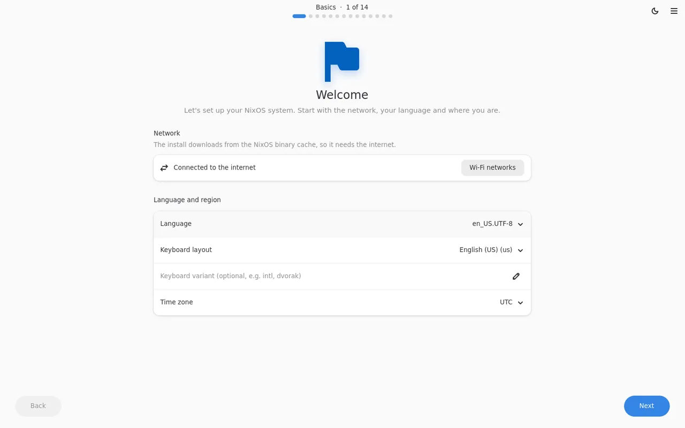

Fourteen layers, mostly “Next”
Every layer has sensible defaults. These are the real screens from the live image, followed by user accounts, the login manager and a review of the generated flake. Pick a step to see it.

No opinions baked in
The choices come from data: nixpkgs, desktop modules and templates. Opinionated setups are entries you can pick.
Every desktop in nixpkgs
GNOME, KDE Plasma, COSMIC, Hyprland, Omarchy, niri, Sway, Xfce, Cinnamon and dozens of window managers, each with an optional ecosystem.
An app store for nixpkgs
22,000 packages by category with icons, screenshots and install sizes. Web apps and AI agents too.
Keybinds, captured
See your desktop's default shortcuts, press new keys to change them, remove or add your own.
Secure by choice
LUKS encryption, Secure Boot with your own keys, TPM 2.0 + PIN unlock, FIDO2 keys and fingerprints.
btrfs, snapshots, swap
disko lays out the disk: btrfs subvolumes, ext4 or XFS, encrypted or not, drawn as you choose it.
Old and new machines
Boots and installs on UEFI and on legacy BIOS, including Libreboot and SeaBIOS.
The output is the product
Your choices become readable Nix in ~/.config/nixos, a git repository with one section per layer.
It's plain NixOS from the official binary cache, not a derivative distro.
- Pinned inputs in
flake.lock, committed on install - Desktop modules imported, not copied
- Rebuild with
nixos-rebuild switch --flakeand keep editing by hand
# Generated by the Configurator. This is your system now: edit it freely.
{ lib, pkgs, ... }:
{
# Basics: language, keyboard and time zone.
i18n.defaultLocale = "nl_NL.UTF-8";
services.xserver.xkb.layout = "us";
time.timeZone = "Europe/Amsterdam";
# Profile: Office.
services.printing.enable = true;
# Desktop: GNOME.
services.desktopManager.gnome.enable = true;
services.displayManager.gdm.enable = true;
# Apps, web apps, AI agents and command-line tools.
environment.systemPackages = [
pkgs.libreoffice
pkgs.thunderbird
pkgs.firefox
];
}Install it
You need a 64-bit PC with 4 GB of memory, a USB stick and an internet connection.
Download
Get the live image and check it against the SHA-256 on the release page.
Write it to USB
GNOME Disks, Fedora Media Writer, balenaEtcher, or
sudo dd if=configurator-live-x86_64-linux.iso of=/dev/sdX bs=4M conv=fsync. The stick is erased.
Boot it
Turn Secure Boot off (the image isn't signed). The installer can set up Secure Boot with your own keys; turn it back on afterwards.
Follow the layers
Pick what you want, review the generated flake, install. The disk you choose is wiped.
Build the system you actually want
Free software under the GPL-3.0. Try it in a VM first, or on the machine you've been meaning to reinstall.